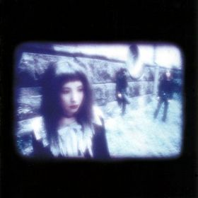
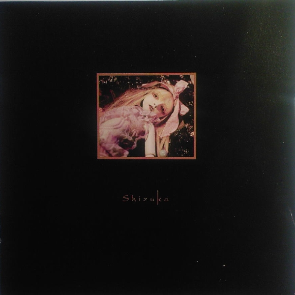

In Memory of Shizuka Miura
三浦静香

天界のペルソナ Heavenly Persona
TRACKLIST
| 1. |
十 |
2:45 |
| 2. |
パンドラの匣 |
6:28 |
| 3. |
少女の口びるに蝶よとまれ |
6:09 |
| 4. |
孤独を図る |
9:55 |
| 5. |
血まみれの華 |
6:15 |
| 6. |
水晶の翼 |
4:24 |
| 7. |
６グラムの星 |
10:20 |

Live Shizuka
- Type: Live album
- Label: Persona Non Grata
- Released: 1995
TRACKLIST
| 1. |
Awanorata |
7:08 |
| 2. |
Glass Ribbon Unraveled |
9:06 |
| 3. |
Flowers for the End |
5:41 |
| 4. |
Heavenly Persona |
9:18 |
| 5. |
The Burial of a Shooting Star |
6:48 |
| 6. |
Planning for Loneliness |
10:14 |
Tokyo Underground '95
TRACKLIST
| 1. |
Lunatic Pearl |
7:33 |
| 2. |
Flowers for the End |
5:50 |
| 3. |
Tobira ~ Yo ni Nokosu Uta |
20:47 |
| 4. |
Heavenly Persona |
5:53 |
伝承美学Traditional Aesthetics
TRACKLIST
| 1. |
天界のペルソナ ～ 世に残す歌 |
26:27 |
| 2. |
扉の開かれる夜 |
8:53 |
| 3. |
オークルの影に浮かぶ幻惑 |
5:13 |
| 4. |
６グラムの星 |
11:49 |